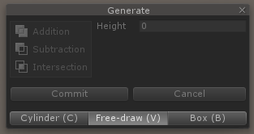

When you first install realtime-CSG you will see these things in your sceneview:
Realtime-CSG has a custom grid. It has a couple of options that the
default Unity grid does not provide, snapping against the grid is one of them:

When snapping is enabled you can snap in different directions with a different step size.
At the top of editor  you can switch between local and global mode.
you can switch between local and global mode.
When in local mode the grid will be rotated to the rotation of the parent object of thing you've selected.
This allows you to work on a rotated grid. Another useful feature is that when you move things on the
grid it will always show everything in the unit you selected, such as meter or centimeter.
The rebuild button is there for the rare case something goes wrong, then you can rebuild
your scene to fix things. Under normal circumstances you won't need to use it.
In a future version this button will probably be moved somewhere else.
Realtime CSG can be used with one view, but when designing levels it's better to see your level from
multiple sides at once. To make this easier Realtime CSG has some enhancements to Unity to better
visualize your level. If you're not interested in setting up a 4 view layout, you can skip this section.
First you change your layout in the top right section, and select the 4 split:

And then set up your views one by one to have 3 orthographic views, and one perspective view.
The orthographic views should each look at the scene in top/bottom, front/back and right/left.
That way you can see everything from each side. You can set the view in the top right corner of
each sceneview. You can right click on the bottom to select the direction or use the gizmo directly.
Once you've done that, for all the ortho (2D) views you want to turn off the skybox and other effects.
You can do that by clicking here:

You probably want to turn off the lighting too (the sun icon).
Finally, you'll want to turn on the special wireframe mode of realtime-CSG that will allow you
to see all the brushes in the scene without all the objects blocking each other and only
rendering the outlines that are helpfull.

That will turn your view from this:

Into this:

This way you can more easily see all the things that make up your level.
One last thing you might want to do is to turn your tool window into an
editor window here:
The tool window is useful to have in your scene view when it's the only view you're using,
or when you're maximizing your view and all your editor windows are hidden. But when you're
switching between multiple views it can get in the way and then it's better to dock it.
Finally, you might want to know that when you click to select a brush, and multiple brushes
are underneath your mouse cursor, you can then cycle between them by clicking multiple times
These are the edit modes that realtime-CSG has:
Object - move, rotate and scale multiple brushes.
Generate - create your brushes.
Mesh - edit the shapes of multiple brushes
Clip - clip away pieces from, or split, multiple brushes.
Surfaces - edit the texturing and smoothing of the sides of the brushes.
Note that you can generate brushes in any edit mode using the hotkeys that are available
for that purpose. You can read about that in the "creating your first brushes" section.
There are a couple of ways to create your brushes in the scene.
If you go to the "generate" edit mode you can switch between two different sub-tools to
create brushes with (you can see the sub-tools at the bottom of the tool window):

This is the generic shape tool with which you can draw a 2D shape and extrude it.
You can draw your 2D shape by creating a point everywhere you click. You can do this
on any surface in the scene, or just on the grid. Note that you can use this tool in any
edit mode by holding V while creating the points and then releasing V.


This is the cylinder shape tool with which you can create a 2D circle and extrude it.
Same as above, you can create this 2D circle on any surface, or on the grid.
For Cylinders the hotkey is C.